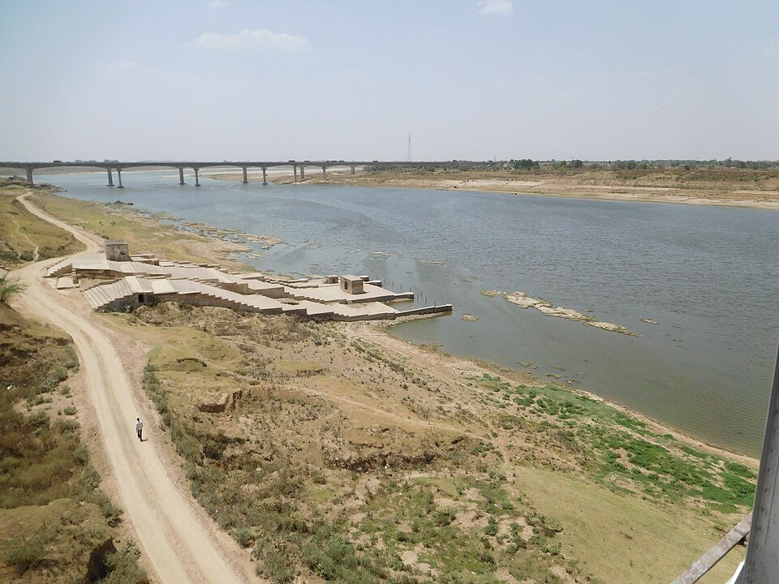
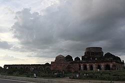
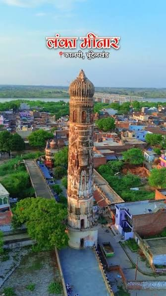

A Town With History
Kalpi is an old town in Jalaun district, Uttar Pradesh, set on the banks of the Yamuna river. It's best known for its role in the 1857 uprising — after the fall of Jhansi, Rani Lakshmibai and Tatya Tope regrouped their forces at Kalpi, which became the site of a major battle against the British in May 1858. In earlier centuries, Kalpi was also an important administrative and trading town, serving as a mint town during the medieval period.
The town is also known for its centuries-old tradition of handmade paper-making, a craft that has been passed down through generations of local artisans.

Known For
1857 Heritage
Rani Lakshmibai and Tatya Tope regrouped here after Jhansi fell, ahead of the Battle of Kalpi.
The Yamuna Riverfront
Kalpi sits directly on the Yamuna's banks, with ghats that have shaped the town's daily life for centuries.
Handmade Paper Craft
A traditional local industry, with paper-making skills passed down through generations of artisans.
Places to Explore
Chaurasi Gumbad (84 Gumbad)

A striking 15th–16th century monument from the Lodi Sultanate era, standing just west of old Kalpi on the way to Orai. It's a square, nine-domed structure inside a walled courtyard, built from rubble blocks laid out in a grid, chessboard-like pattern, with eight rows of pillars linked by arches supporting a flat roof and a central dome rising about 60 feet. The name — "84 domes" — comes from its 84 door arches. Two graves lie beneath the central dome, believed to belong to one of the Lodi Sultans.
Lanka Minar

Located in Kalpi's Ganesh Ganj area, Lanka Minar is said to be the only monument in North India built in memory of Ravana. Visitors climb a long flight of steps to reach the top, where statues and scenes depicting the Ramayana line the way up, and the tower offers panoramic views over Kalpi and the Yamuna below.